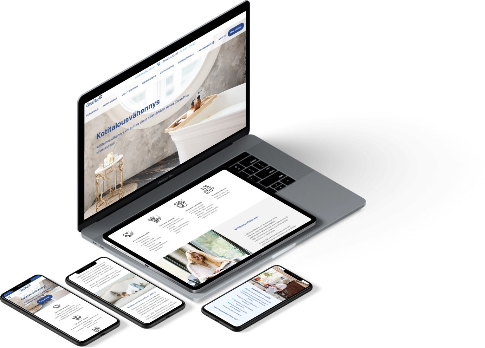
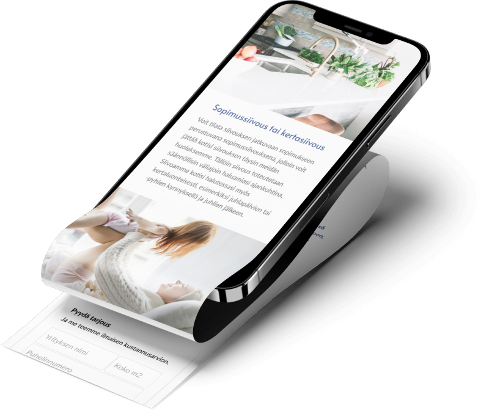
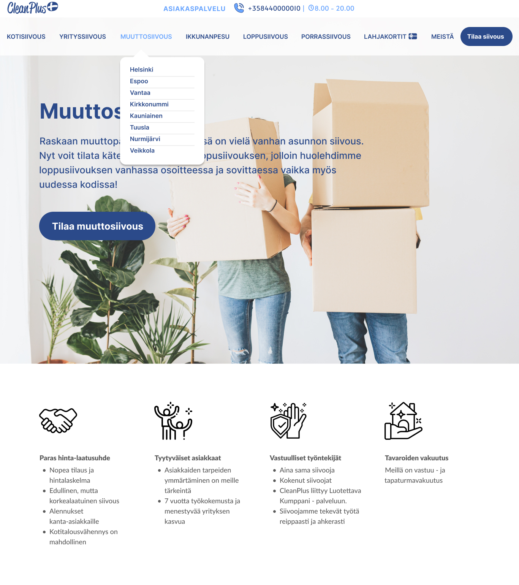
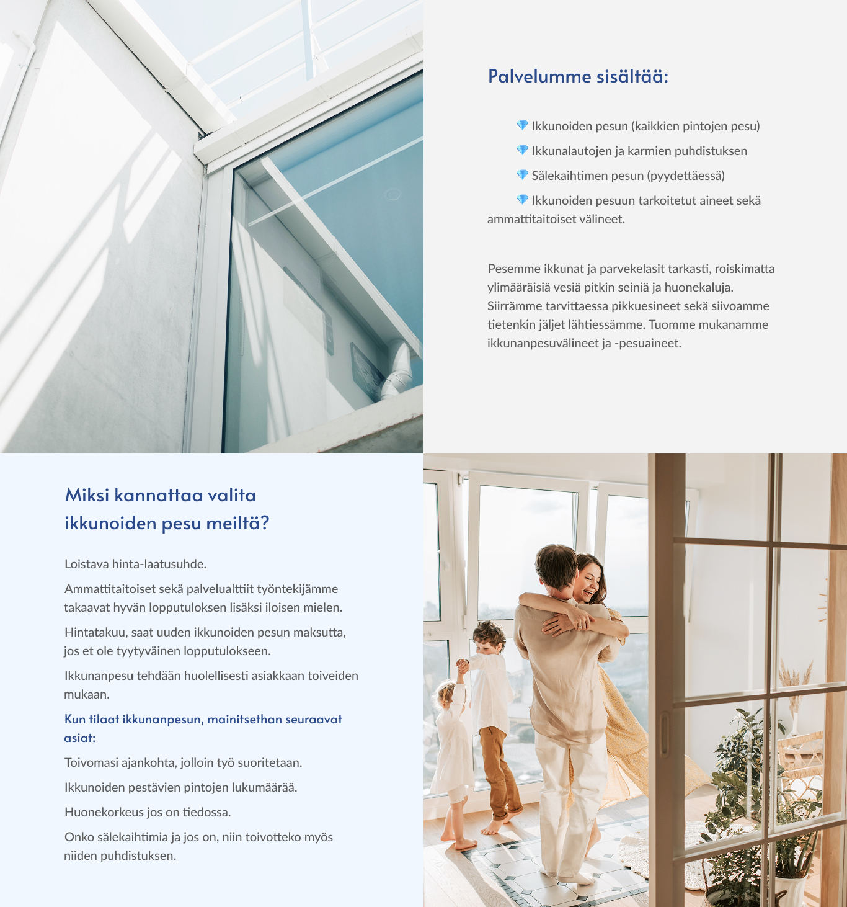
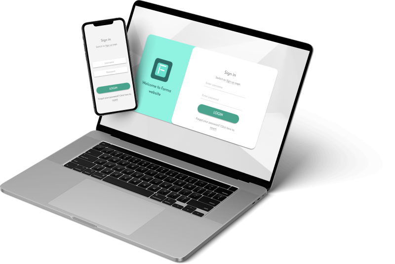
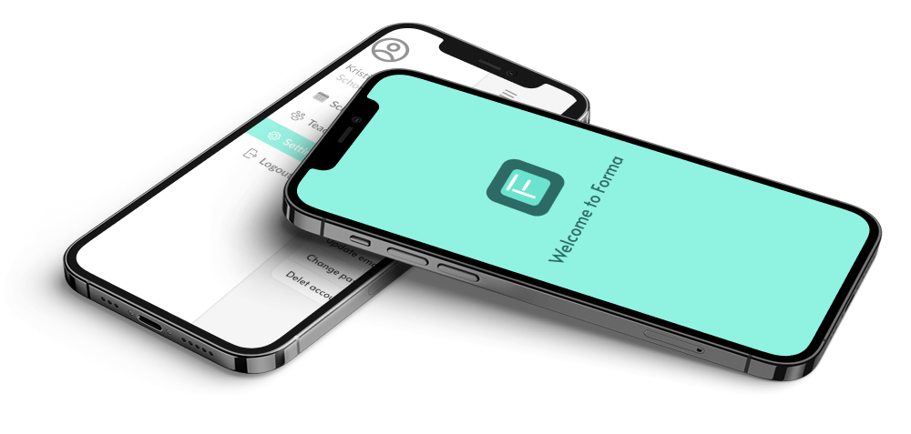
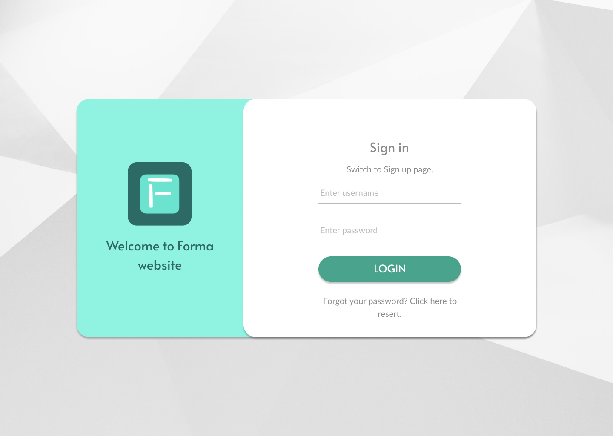
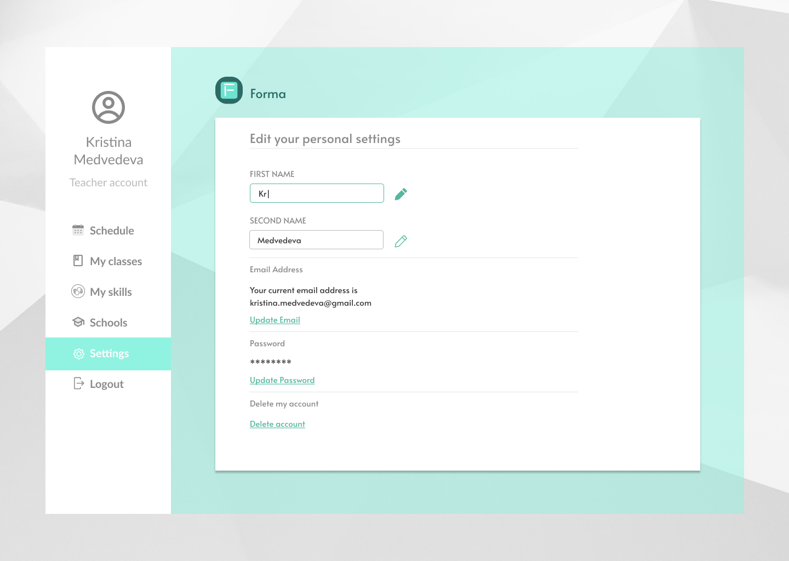

In my recent UX/UI design work, I completed two key projects that helped me grow both creatively and technically. I designed a modern, responsive website for a cleaning company, focusing on clear navigation, service visibility, and easy contact options to improve user trust and engagement. I also worked on an application for a startup, where I was involved in wireframing, prototyping, and user testing to ensure the interface was intuitive and aligned with the brand’s goals. Both projects strengthened my skills in design thinking, collaboration, and user-centered design.
This UI/UX project was created for a Finland-based cleaning company, with a focus on clean, Scandinavian minimalism. The goal was to design a responsive website—accessible on both web and mobile—that communicates the company’s services clearly while maintaining a calm and trustworthy visual tone. Inspired by Scandic design principles, the interface emphasizes simplicity, whitespace, and usability.
The site provides a comprehensive overview of the company, including service offerings, pricing, and company values. Key features include an online ordering system for booking cleaning services, a section for purchasing digital gift cards, and an intuitive contact flow. The design prioritizes clarity and ease of use, making the experience seamless for both new and returning users.




Forma is a mobile application designed to streamline the connection between schools and substitute teachers. The main goal of the platform is to enable a fast, simple, and reliable way for schools to request substitutes and for teachers to accept assignments—all within a few taps.
As the sole designer on this project, I was responsible for the full UX/UI process, including wireframing, interface design, prototyping, and user testing. The app’s design emphasizes clarity, efficiency, and ease of use, with a clean layout and intuitive navigation tailored for busy school staff and educators.
Forma’s interface supports real-time requests, quick approvals, and profile management, all optimized for mobile use. The final solution was shaped through user feedback and iterative testing to ensure both functionality and a positive user experience.




I’m always excited to take on new challenges and continue growing as a UX/UI designer. Whether it’s designing intuitive apps, building clean and responsive websites, or collaborating on meaningful user-centered solutions—I’m eager to bring creative ideas to life. I look forward to connecting with others and contributing to new projects that make a real impact..